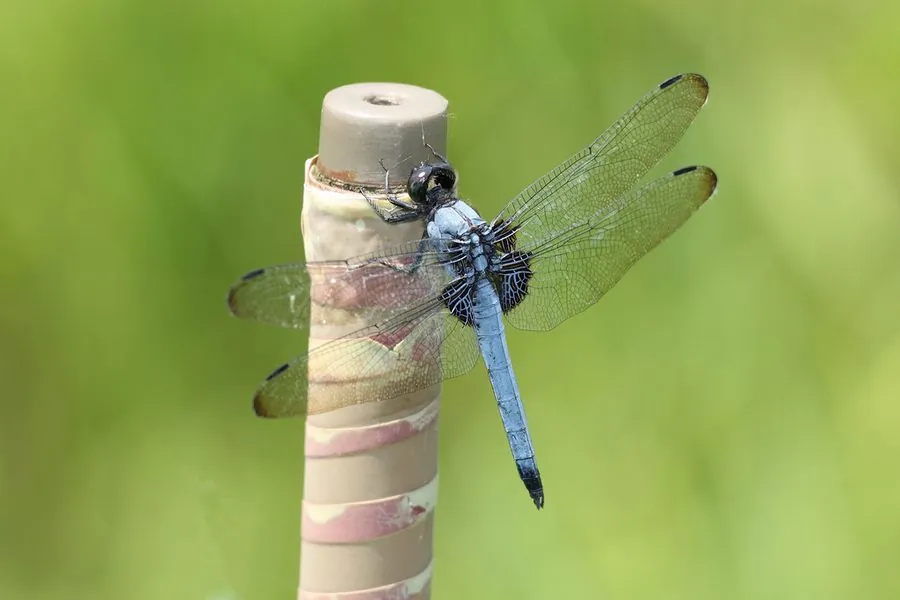

昆虫 · 动物界
黑背晴蜓 Orthetrum melania

腹部基部膨大、体色深暗的蜻科昆虫，雄虫通体蓝灰或黑灰色，常停在池塘边的枝头守望领地，是常见的大型蜻蜓。
- 分类
- 门节肢动物门纲昆虫纲目蜻蜓目科蜻科属灰蜻属
- 栖息环境
- 池塘、湖泊、沟渠和缓流河边，成虫常在枝头和石头上停歇
- 地理分布
- 东亚地区，包括中国、日本和朝鲜半岛
- 保护级别
- 暂无评估
物种志
黑背晴蜓成虫体长 40–50 mm，翅展 70–80 mm。雄虫体色蓝灰至黑灰，腹部基部略微膨大，翅透明，翅痣黑色；雌虫黄褐色，体侧有黑色斑纹。它的复眼大，占据头部的大部分，视野开阔。
黑背晴蜓分布于东亚，包括中国、日本和朝鲜半岛，栖息于池塘、湖泊、沟渠和缓流的河边。成虫捕食蚊、蝇等飞虫，雄虫有较强的领域行为，常停在枝头或石头上守望领地，驱赶入侵的同类。稚虫水生，捕食水中的小动物，是池塘生态系统中重要的小型捕食者。蜻蜓目是现存最古老的飞行昆虫类群之一，它们的翅脉结构和飞行能力一直吸引着研究者的关注。目前它没有IUCN 的正式评估，中国未将其列入国家重点保护野生动物名录。
形态与习性
- 食性成虫捕食蚊蝇等飞虫，稚虫捕食水中小型动物
- 体长40–50 mm，翅展 70–80 mm
- 雌雄差异雄虫蓝灰至黑灰色，雌虫黄褐色带黑斑
- 栖息地池塘、湖泊、沟渠和缓流河边
- 领域行为雄虫常停在枝头守望领地，驱赶同类
- 稚虫水生，是水中的小型捕食者
趣味知识
- 黑背晴蜓的雄虫通体蓝灰，雌虫则是黄褐色带黑斑。
- 雄虫常停在池塘边的枝头守望领地，驱赶入侵的同类。
- 蜻蜓的稚虫在水中生活，是水中的小型捕食者。